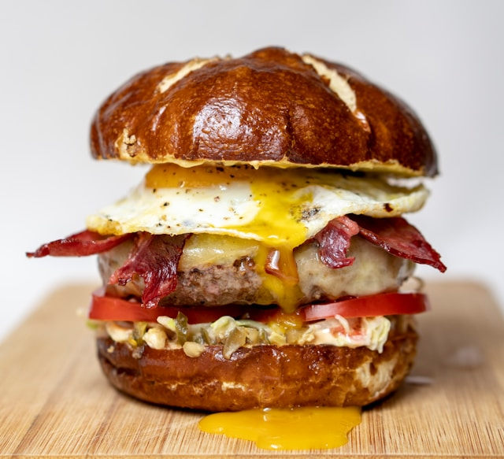

The Path to a great Cheeseburger

If your kitchen doesn't blow up, your cheeseburger should look like this
The recipe we are going to follow today is very simple, yet just as
effective as the more intermediate ones
Ingredients
- 1 Hamburger bun
- 1 Ground beef patty
- Ketchup and mayonnaise sauce
- 2 Slices of cheddar cheese
- Lettuce and Tomatoes
Steps
- First of all mix your sauce
-
Fire up your grill and place your patty on it(Cook for about 3 minutes
ot each side)
-
Just before it is done put your bun for about half a minute to slightly
roast it
-
Put it all together! Don't spare on the sauce, as it really is what's
bringing it all together
Back to Home Page